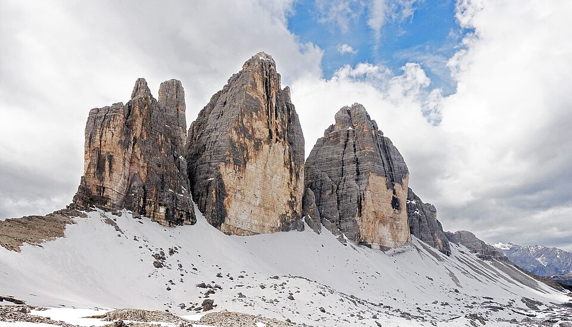

Viaje en van · Italia
Los Dolomitas
en van
Milán Malpensa · 25 de mayo – 2 de junio de 2026 · 2 personas
Reserva antes de salir —
Aparcamiento Lago di Braies, noche en Rifugio Auronzo, acceso carretera Tre Cime (€35–40). Se agotan semanas antes.